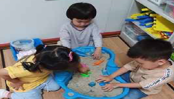

놀이치료의 의의
놀이는 아동의 감정. 욕구. 경험, 생각이 존재한다. 언어 활용이 성인보다 미흡하고 충분히 발달되지 않은 아동기는 가장 자연스러운 비언어적인 의사소통이 놀이다. 놀이는 치유적 힘이 존재하기 때문에 치료자가 시회 정서적인 어려움이나 발달상의 문제를 가진 아동에게 무의식적으로 억압된 정서를 발산시키는 장점이 있다.

놀이는 내면의 언어와 같다
언어에는 수 많은 단어가 있고 그 단어에는 수 많은 감정과 의미가 있다. 놀이가 언어라면 놀잇감이나 놀이도구는 단어라고 할 수 있다. 성인은 언어를 통해 자신의 어려움을 표현하고 해결하지만 아동기에는 완전한 문장을 구사하지 못하기 때문에 놀이를 통해 많은 것을 표현한다. 즉, 아동은 자신의 생각이나 감정을 말로 표현하는데 제약이 있기 때문이다. 놀이는 언어적 요소보다 표정, 응시, 손동작, 자세, 목소리의 강도, 말의 속도 등과 같은 비언어적 의사소통에 의존하므로 민감하게 반응을 해줘야 한다.
놀이는 상징적 표현이다
아동의 내재된 불안감에 대한 방어기제를 파악하면서 의식적인 내용이 말로 표현되는 것을 알 수 있다. 놀이는 아동의 무의식을 상징적인 표현으로 표출하도록 도와주며, 이에 동반되는 긴장과 불안을 완화시켜준다. 놀이는 언어적 의사소통에 깊이를 더하고 명확한 의미 전달에 도움을 주는 비언어적 표현과 비언어적 행동적으로 전달되는 메시지이다. 이를 해석할 수 있도록 단서를 자연스럽게 놀이를 통하여 제공해 준다.
놀이의 일반적인 기능은 다음과 같다.
1) 생물학적(biological) 기능
기본적인 근육운동을 하면서 과도한 에너지를 배출과 동시에 감각을 자극하고 이완해가는 기술을 익힌다.
2) 개인내적(intrapersonal) 기능
세상을 탐색하고, 마음과 몸, 세상의 기능에 대한 이해를 발달시켜주며, 인지 발달을 돕기 위해 특정 상황을 극복하여 자신의 역할이나 기능을 하고자 하는 열망(Functionlust) 또는 갈등을 해결해준다.
3) 대인관계적(interpersonal) 기능
대상을 상징적으로 대체할 수 있는 놀이감에 집중하다보면 불안을 극복할 수 있으며, 사회적 기술의 발달로 분리-개별화(separation-individuation)를 성취하게 한다.
4) 사회문화적(sociocultural) 기능은 바람직한 역할을 모방한다.
환경 사이의 불균형을 해소함으로써 아동 자신의 자연스러운 자기 성장을 도와줄 수 있다
놀이는 심리분석적 관점에서 정서가 투사되는 장이다
놀이를 통해 아동들은 두려움과 좌절 등 부정적인 정서를 상징적으로 표출함으로써 자신의 걱정을 정화한다. 정신분석학적 입장의 프로이드(Freud，1961)，에릭슨(Erickson，1963)은 놀이를 정서의 카타르시스를 위한 통로라고 보고 아동들은 놀이를 할 때 자기가 선택한 역할을 수행하는 과정을 통해 자신의 욕구 표현과 실현의 기회로 삼는다고 보았다.
놀이는 치료적인 힘을 가지고 있다
이러한 치료적 힘으로 인해 아동을 대상으로 하는 심리치료에 적극 활용되어 정서적 부적응 문제의 치료 및 정상아의 정서적 자기통찰과 부적응을 예방하는 데 활용될 수 있다. 놀이가 아동들의 심리치료에 적용되는 이유를 살펴보면 아동은 자신이 생각하는 바를 놀잇감과 쉽게 상호작용을 할 수 있는 매개체로써 사회적 관계에 필요한 의사소통을 촉진시킨다.
놀이는 감정과 좌절을 해소하는 정화적 기능이 있다
놀이의 치료적 경험은 아동은 자기 자신을 있는 그대로 수용하게 된다. 아동 자신이 누구이며, 원하는 것이 무엇인지, 그리고 어떻게 해나가야 되는지를 건설적으로 알아가게 된다. 즉, 아동은 놀이치료를 받으면서 닫아두었던 마음의 문을 열고, 두렵고 혼란스러웠던 자신의 감정. 욕구，바람，생각 등을 하나씩 표현한다. 이 과정에서 증상은 완화되거나 없어진다. 또한 일상생활에서 자기 자신에게 적절한 태도와 행동을 취하고 자신이 주인공이 되는 주도적인 삶을 살아가게 된다.
아동은 내적인 긴장, 불안, 공격성, 두려움, 좌절감 등을 표출시킬 수 있는 기회를 갖게 되고 그런 감정들을 놀이를 매개로 조절할 수 있다. 다시 말해 아동의 심리적인 문제를 언어로 표현하는 것이 아니라 놀이활동을 통해 치유하도록 도와주는 심리치료의 한 방법이 놀이치료(play therapy)이다. 놀이치료는 아동상담에서 언어를 통한 상담이 갖는 한계를 극복하는 데 많은 기여를 하고 있다.
이와 같이 놀이치료는 아동의 현재 사고와 감정，행동은 과거에 경험했던 감정이나 사고의 영향을 받은 것이므로 무의식적 세계의 갈등을 놀이를 통해 표현하게 된다. 치료사의 해석을 통해 아동이 자신에 대한 통찰을 얻고， 스스로 문제를 해결해 나가도록 한다. 놀이치료의 목표는 아동의 자아를 강화시켜 발달 수준으로 회복함으로써 문제를 긍정적으로 해결할 수 있다.
참고문헌
박정옥, 김미량, 김수희(2013). 영유아 놀이지도. 양서원.
박찬옥, 정남미, 곽현주(2014). 놀이지도. 정민사.
박순길, 권순황, 김현진, 선애순, 한재금(2017). 아동상담, 양서원.
전남련, 최진원, 권경미, 박은희, 남궁기순(2013). 놀이지도. 정민사
2021.11.02 - [분류 전체보기] - 영아기와 유아기 놀이의 중요성과 인지발달과 관계
영아기와 유아기 놀이의 중요성과 인지발달과 관계
1. 영아기와 유아기 놀이의 의미 아이에게 놀이란 세상을 배우는 수단이자 삶 그 자체다. 또한 놀이야말로 아이를 아이답고 건강하게 키울 수 있는 유일한 방법이다. 아이는 놀이를 통해서 사회
think-sis.co.kr
2021.11.03 - [분류 전체보기] - 영아기와 유아기 놀이가 인지발달에 미치는 영향 비교
영아기와 유아기 놀이가 인지발달에 미치는 영향 비교
1. 영아기 놀이가 인지발달에 미치는 영향 영유아들은 놀이라는 자연스런 형태로서 자신들의 의사를 전달한다. 영유아들은 비록 말하기를 매우 좋아하는 아이일지라도 놀이를 통해서 그들이
think-sis.co.kr